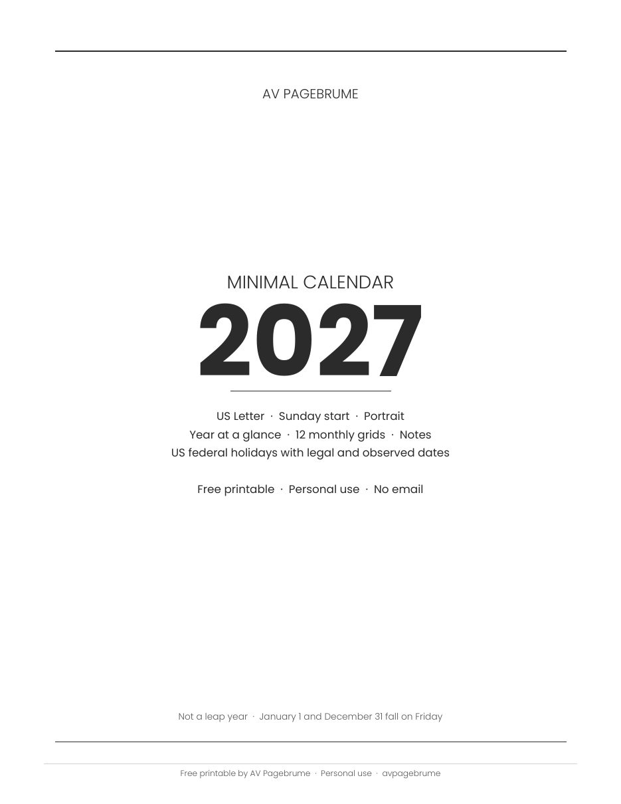
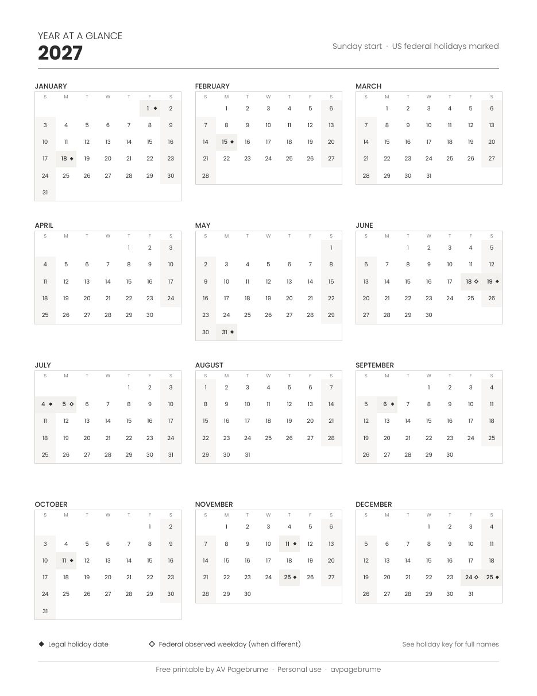
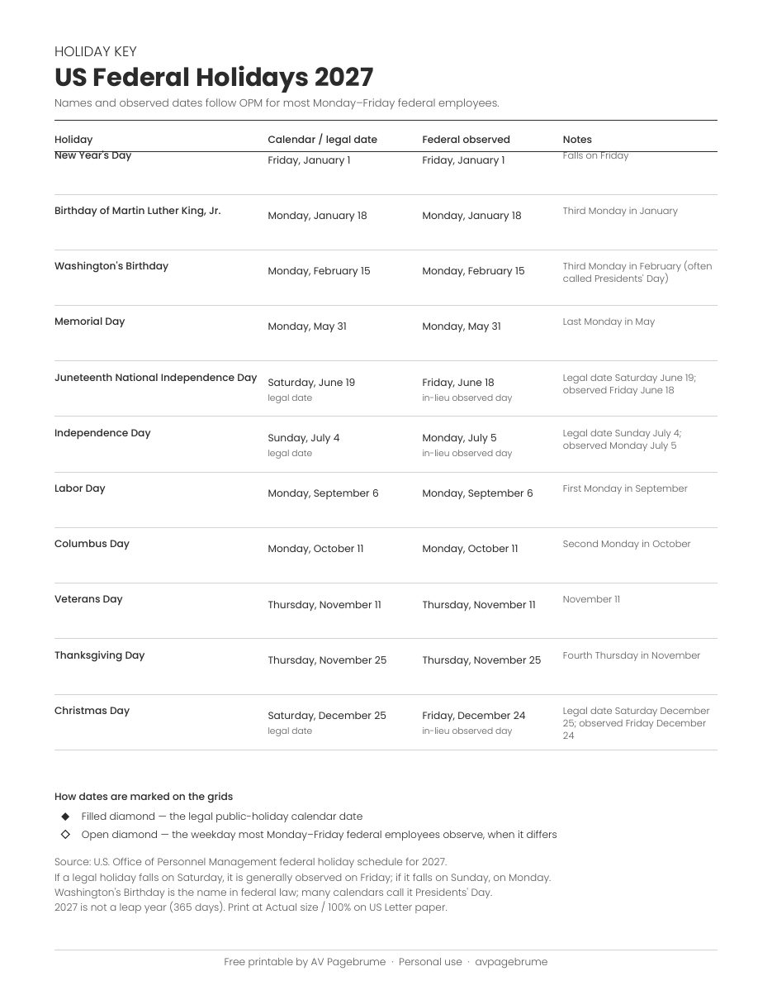

Free printable
Free 2027 Minimal Calendar Printable (US Letter PDF)
Yes. This free 2027 calendar printable is a US Letter PDF you can download with no email and no sign-up. It has a year-at-a-glance page, twelve monthly grids with room to write, and a US federal holidays key. The layout is charcoal and minimal, for a desk or a binder. It is free for personal use.
What's in the download
The file is 15 pages, portrait, on US Letter paper (8.5 by 11 inches). Weeks start on Sunday and run through Saturday, which matches common US wall and desk calendars. This is the only file on this page. There is no Monday-start pack and no A4 pack. Print the pages you need.
Year at a glance
One page shows all twelve months of 2027. Holidays are marked on the small grids. A filled diamond is the legal calendar date. An open diamond is the federal observed weekday, and it appears only when that day is different.
Monthly grids
January through December each have their own page. The month name and 2027 sit at the top in charcoal. Day numbers have room underneath for a short note. A notes block with writing lines runs along the bottom. Weekend columns are only lightly shaded, so the page stays low-ink. There are no week numbers, moon phases, or decorative icons.
Holiday key
The last page is the US federal holiday key. It lists each holiday, the legal date, and the observed weekday when those two days differ. Washington's Birthday is the federal name. Many calendars call that Monday Presidents' Day.
How to print
Print on US Letter paper, portrait. Set the scale to Actual size or 100%. Fit to page and Shrink to fit can make the grid smaller than the file. The PDF is already 8.5 by 11 inches, with its own margins. The lines are charcoal on white, so a black-and-white print is enough. Print the year page, one month, or the full set.
Preview
Cover, year at a glance, January, and the holiday key. The other months use the same grid.




Download
This button is the full 15-page PDF. The file downloads directly. There is no email field and no account. Personal use.
2027 calendar facts
2027 is not a leap year. It has 365 days. January 1, 2027 falls on Friday, and December 31, 2027 falls on Friday. Weeks in this printable start on Sunday.
US federal holidays in 2027
For most Monday to Friday federal employees, the U.S. Office of Personnel Management (opens in a new tab) schedule for 2027 is below. When a legal holiday falls on Saturday, it is generally observed on Friday. When it falls on Sunday, it is generally observed on Monday.
| Holiday | Legal date | Observed |
|---|---|---|
| New Year's Day | Friday, January 1 | Same day |
| Birthday of Martin Luther King, Jr. | Monday, January 18 | Same day |
| Washington's Birthday | Monday, February 15 | Same day |
| Memorial Day | Monday, May 31 | Same day |
| Juneteenth National Independence Day | Saturday, June 19 | Friday, June 18 |
| Independence Day | Sunday, July 4 | Monday, July 5 |
| Labor Day | Monday, September 6 | Same day |
| Columbus Day | Monday, October 11 | Same day |
| Veterans Day | Thursday, November 11 | Same day |
| Thanksgiving Day | Thursday, November 25 | Same day |
| Christmas Day | Saturday, December 25 | Friday, December 24 |
Three of them fall on a weekend. Juneteenth is Saturday, June 19, observed Friday, June 18. Independence Day is Sunday, July 4, observed Monday, July 5. Christmas is Saturday, December 25, observed Friday, December 24. The monthly grids mark both days: a filled diamond on the legal date and an open diamond on the observed weekday. The other holidays fall on a weekday, so the legal date and the observed day are the same.
Washington's Birthday, the third Monday in February, is the name in federal law. Many people call it Presidents' Day. The key uses the federal name.
Pair it with
The Christmas gift tracker uses the same charcoal style. It is an undated two-page list for who the gift is for, the idea, the budget, and whether it is bought and wrapped. This calendar has no budget worksheets. If you were looking for a 2027 budget planner printable, use these dates first, then the gift tracker for a simple gift budget. A fuller 2027 planner may come later. It is not for sale, and this page does not link to one.
Coloring pages from Little Animal Helpers are a separate set for kids ages 4-8. They are listed with this calendar on the free printables page.
FAQ
Is there a free printable 2027 calendar I can download as a PDF?
Yes. AV Pagebrume's free 2027 minimal calendar printable is a US Letter PDF with a year-at-a-glance page, twelve monthly grids, a notes area, and a US federal holidays key. It uses a charcoal, low-ink layout for a desk or a binder. You can download it with no email signup. It is free for personal use.
What are the US federal holidays in 2027?
For most Monday to Friday federal employees, the U.S. Office of Personnel Management lists New Year's Day (Friday, January 1), Birthday of Martin Luther King, Jr. (Monday, January 18), Washington's Birthday (Monday, February 15), Memorial Day (Monday, May 31), Juneteenth National Independence Day (observed Friday, June 18; legal date Saturday, June 19), Independence Day (observed Monday, July 5; legal date Sunday, July 4), Labor Day (Monday, September 6), Columbus Day (Monday, October 11), Veterans Day (Thursday, November 11), Thanksgiving Day (Thursday, November 25), and Christmas Day (observed Friday, December 24; legal date Saturday, December 25).
Does the 2027 calendar start on Sunday, and what size is it?
The download is US Letter (8.5 by 11 inches), portrait, with weeks starting on Sunday and running through Saturday. That matches common US wall and desk calendars. This page does not include a Monday-start file or an A4 file. Print at Actual size or 100% so the grid is not shrunk.
Is 2027 a leap year? What weekday does January 1 fall on?
No. 2027 is not a leap year. It has 365 days. January 1, 2027 falls on Friday, and December 31, 2027 falls on Friday.
How do I print the 2027 calendar so the grid is not shrunk?
Print on US Letter paper in portrait orientation. Set the scale to Actual size or 100%. Avoid Fit to page and Shrink to fit, which can shrink the grid. The lines are charcoal on white, so a normal black-and-white print uses little ink. You can print one month, the year page, or the full 15-page PDF.
Can I use this calendar for commercial use or resale?
No. The PDF is free for personal use. Please do not resell the file or printed copies.
Is there a 2027 planner for sale?
Not yet. This page is the free calendar only. A fuller 2027 planner may come later. It is not for sale, and this site does not link to one. For a simple gift budget, use the Christmas gift tracker.